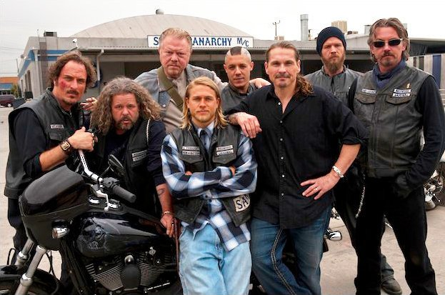
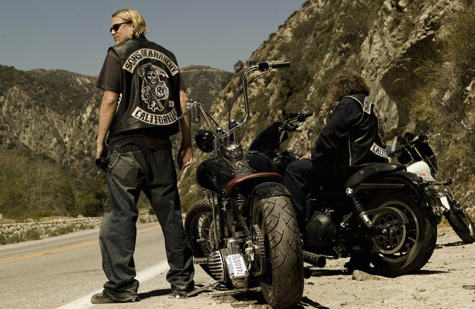
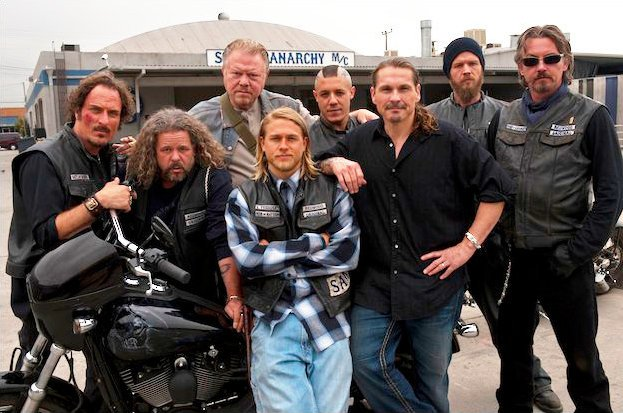
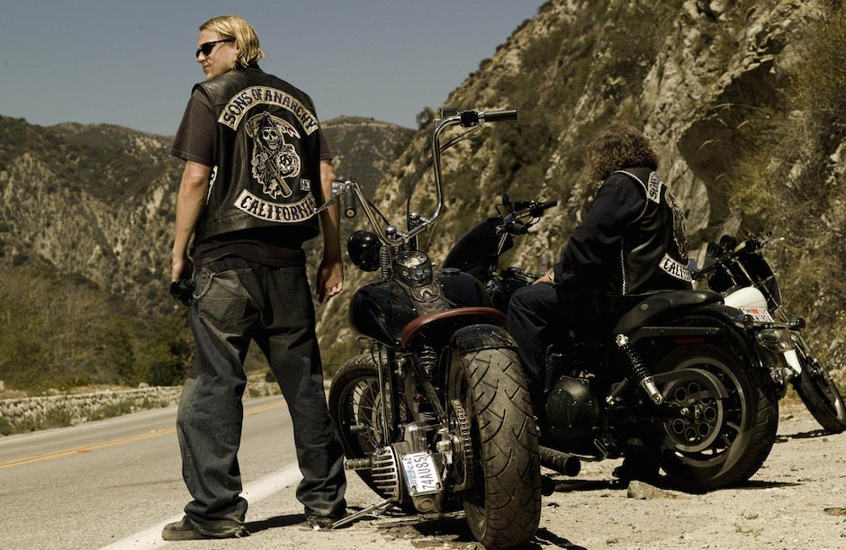
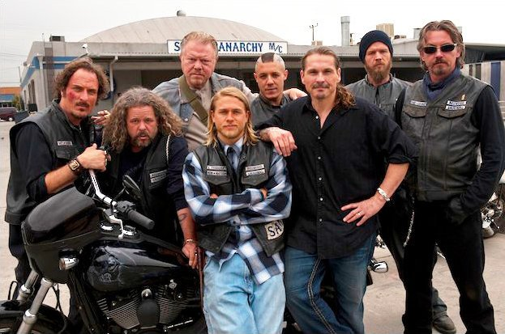
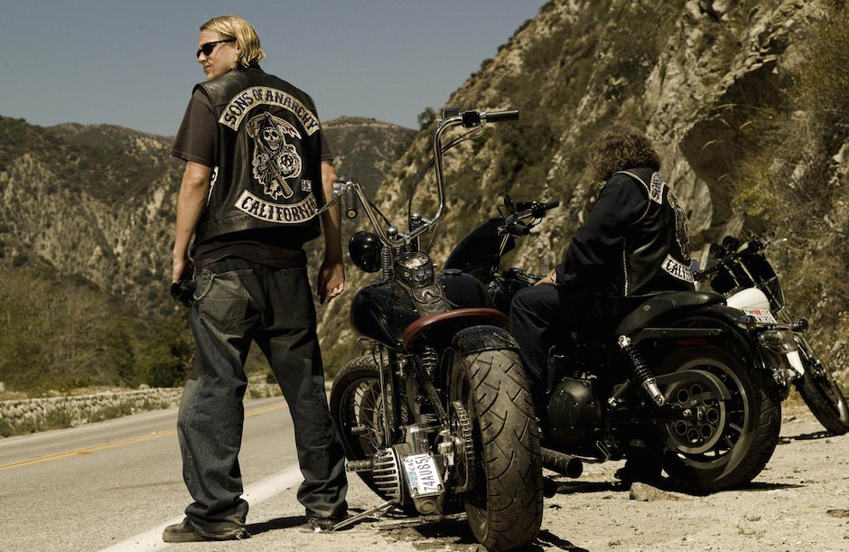

❮
❯


| Ano | 2008 | |
| Dirigido por: | Kurt Sutter | |
| Duração: | 7 temporadas | Episódios: 92 |
| Classificação: | +14 | |
| Genero: | Ação/Aventura | |
| País de origem: | Estados Unidos | |
| Estado: | Finalizada |
Sons of Anarchy (no Brasil, SAMCRO[1]) é uma série dramática de televisão estadunidense criada por Kurt Sutter sobre a vida de motociclistas (membros de um clube de Motociclistas ou Motoclube) que se passa em Charming, uma cidade fictícia no norte da Califórnia.
O protagonista é Jackson Teller (Charlie Hunnam), também chamado de "Jax", que é o vice-presidente do clube Sons of Anarchy, fundado por seu falecido pai.
Nos dias de hoje, o clube é comandado por Clarence Morrow (Ron Perlman), apelidado por "Clay", presidente do clube, que é casado com a mãe de Jax, "Gemma Teller". Para sobreviver, "Jax" terá que conciliar os interesses do clube, com a sua vida normal com sua ex-esposa e filho, passando pelas investidas da ATF e IRA.